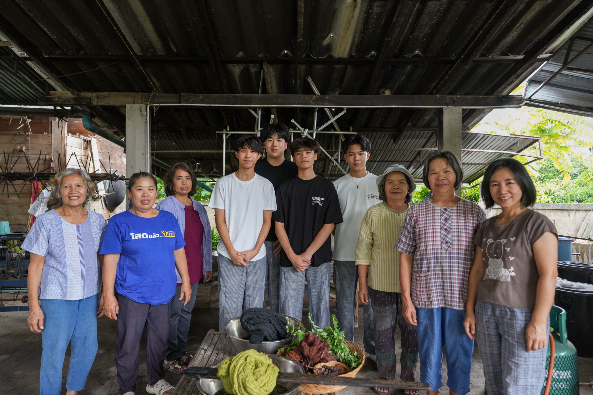
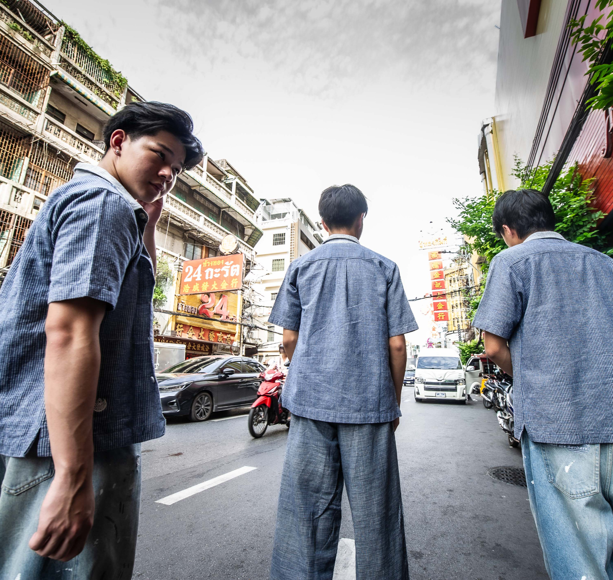
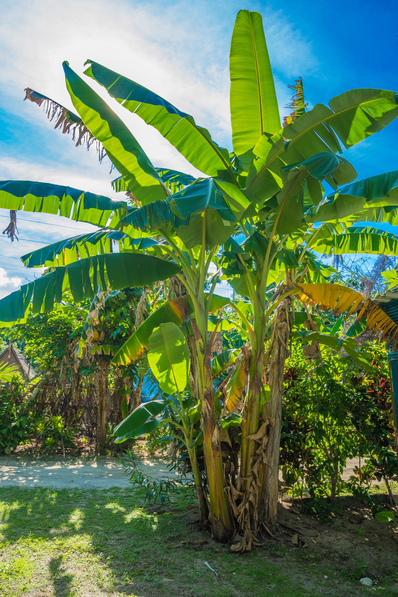
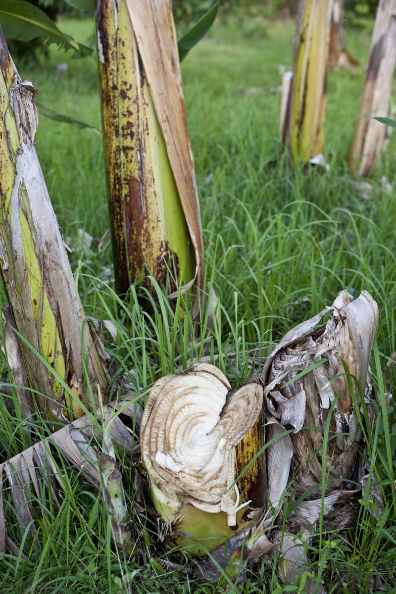
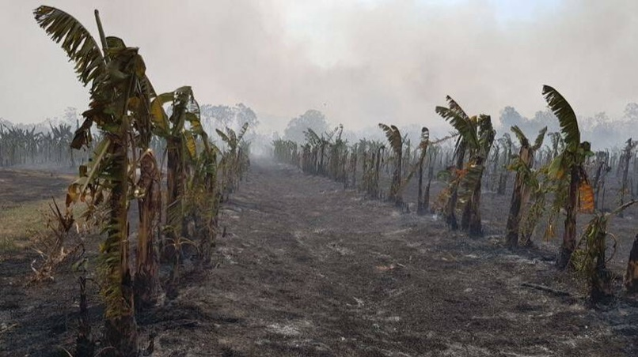
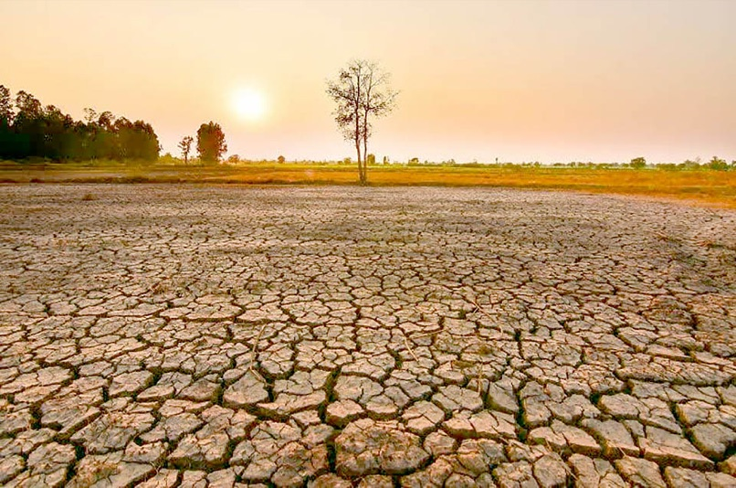
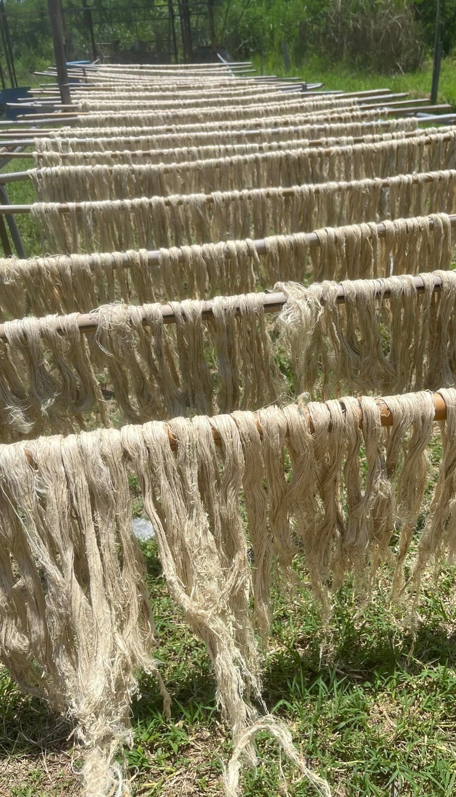
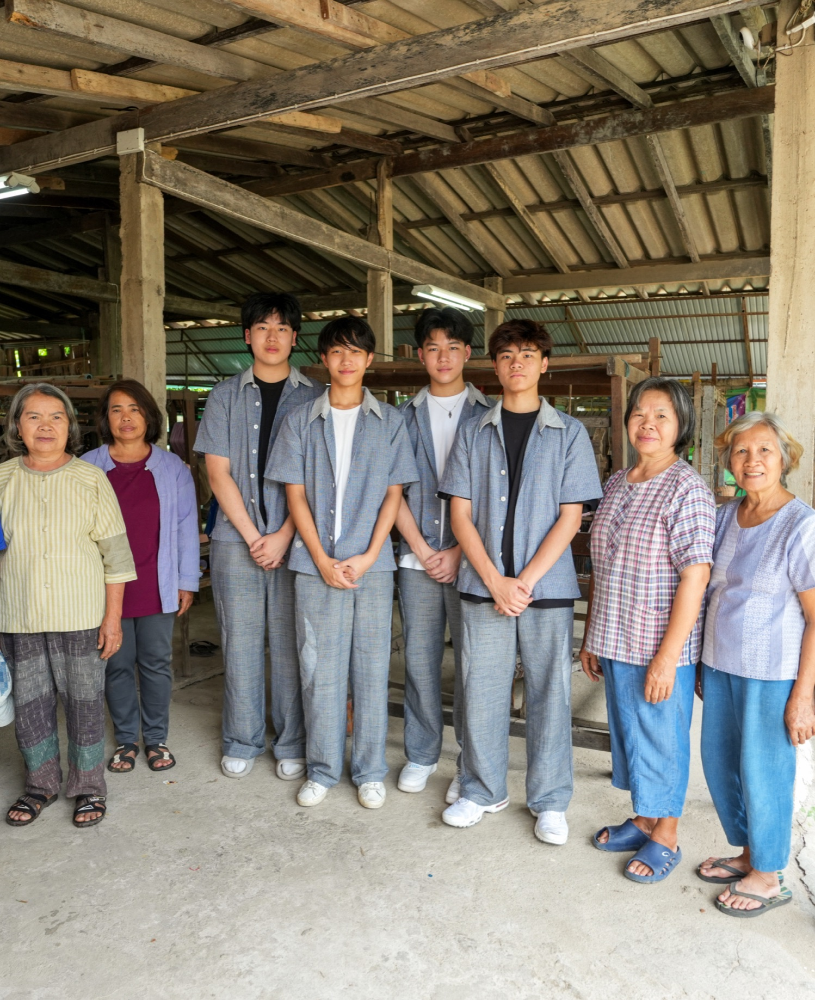
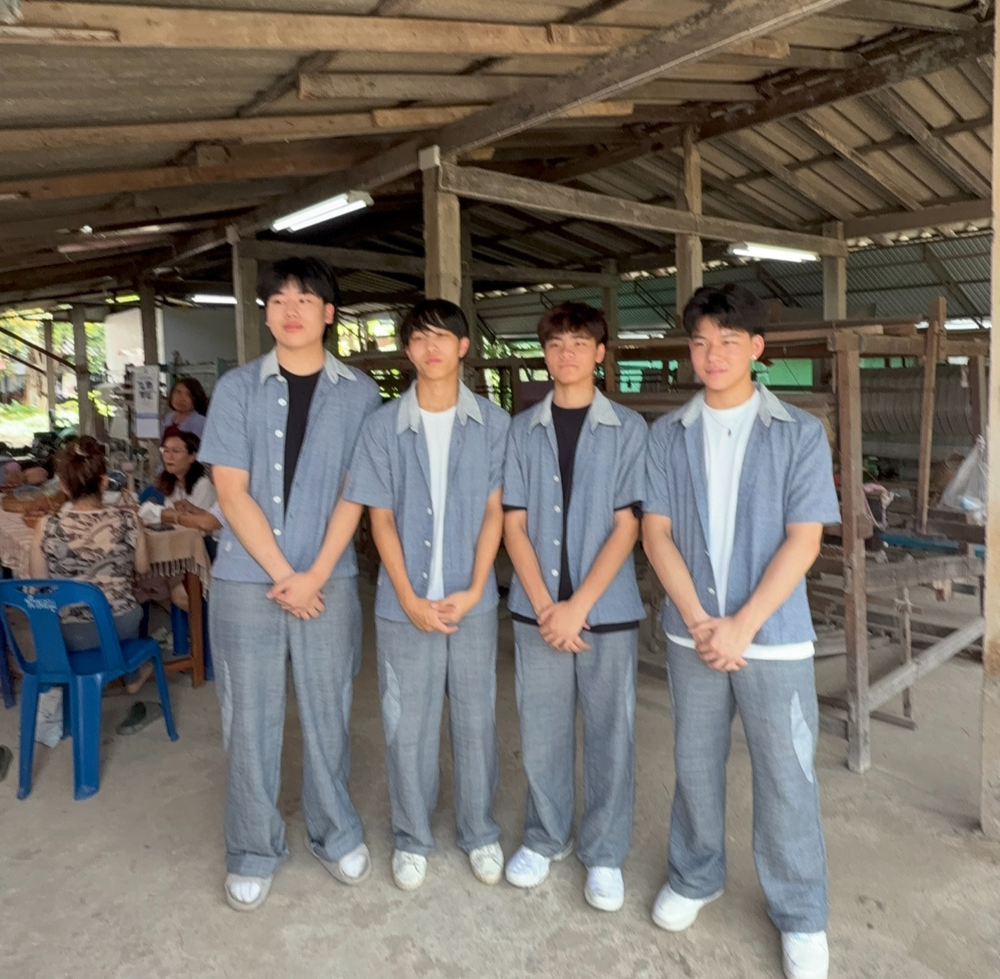

From a tree that
fruits once, cloth
that lasts
Banana stem fibre
Natural dye
Jaeson village
Clothing initiatives
Fashion is a strong driver in achieving our goal of a greener country. Through clothes weaved from fruit and fruit-tree waste, we aim for our fashion to become an example of how sustainability can be ingrained into daily life.

Banana stem fibre
Why?

Thailand is one of the largest producers of bananas each year, producing up to 1.3 million tonnes. That number is followed by a vast proportion of banana trees within our country — from plantations to backyards, the plant is a common sight amongst Thai lives. However, banana trees can only produce bananas once in their lifetime, leading them to often be cremated, contributing to global warming.
Additionally, commonly used materials such as cotton and wool are often grown from deep-rooted plants. This means overconsumption of water is a prevalent problem in the fashion industry overall — especially in the drier northeastern regions of Thailand.
There is a great disparity of wealth within Thailand, as economic prosperity is concentrated in major cities and surrounding suburbs like Bangkok. This centralisation leaves many rural areas with limited access to infrastructure, education, and funding. As a result, there are numerous overlooked manufacturers in these regions — people with promising ideas but few opportunities to grow. Without support or exposure, their innovations often go unnoticed, reinforcing the cycle of inequality.



Our solution
Banana fibre

- 01
Low water consumption
A short root system, unlike deep-rooted cotton and wool.
- 02
Biodegradable
- 03
Prevents the cremation of banana trees
- 04
Natural dye
- 05
Highly durable
Supporting the community
Jaeson village

We are immensely fortunate to have had the help of the Jaeson village community in manufacturing our clothes.
Through cooperation with Ecoscope, we are able to offer a higher level of income, as any profit made goes to our manufacturers, the wider Jaeson community and animal conservation groups. Moreover, our streetwear design is entirely distinct from their previous productions — so through producing Ecoscope clothes, the workers are able to take inspiration, potentially adding even more diversity to their existing collection.

10 July · The visit
We travelled to their location in order to grasp a deeper understanding of our clothes’ manufacturing process, and to offer our gratitude to our manufacturers. There, we were able to witness a different spectrum of fashion — one ingrained with tradition, from traditional wooden weaving looms to a variety of handcrafted Thai garments.